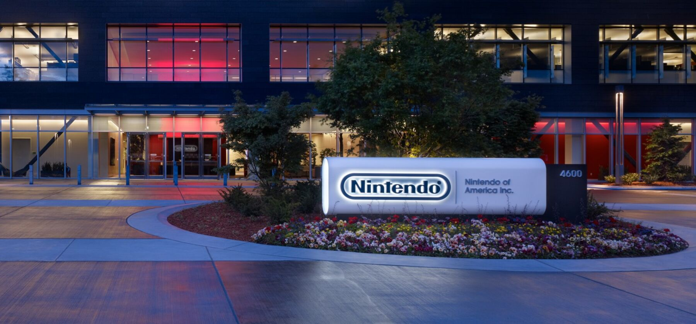
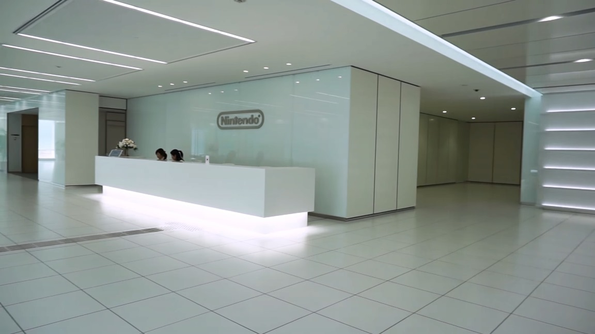
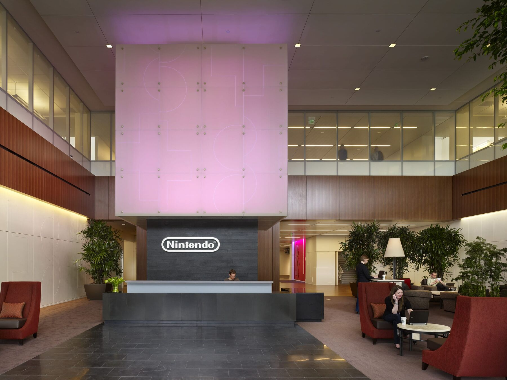
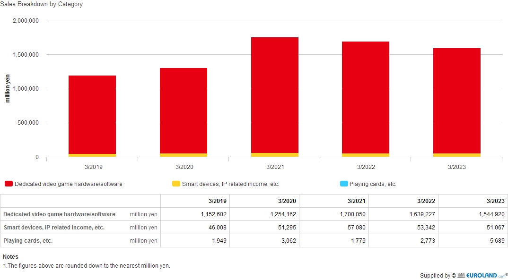
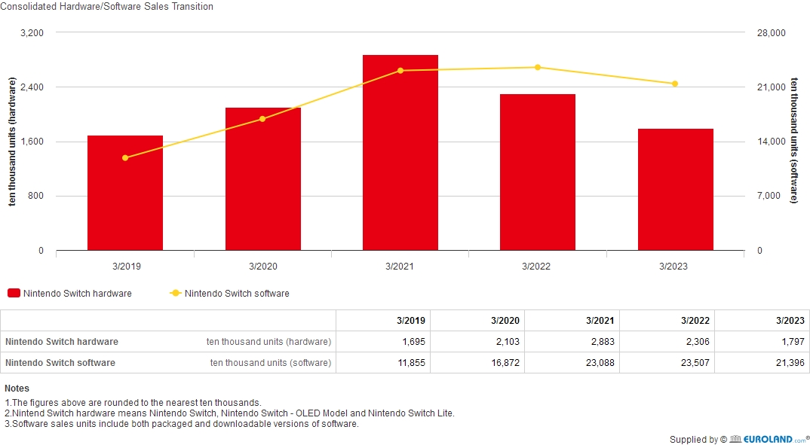

Groupe Japonais fondé le 23 septembre 1889, originellement vendeur de carte à jouer pour enfants
Nintendo emploie 7,317 personnes au 31/03/23.
| Siège social Japonais | Siège Social Américain |
| Kyoto, Préfecture de Kyoto, Japon | Redmond, Washington, USA |
|  | |
|  |  |
Nintendo est une société qui est spécialisée dans la construction et la conception de jeu et de jeux vidéos
On peut voir qu' il y a eu une forte augmentation du chiffre d'affaires entre 2020 et 2021. cela est fort probablement dû au confinement on peut confirmer ceci car dès 2022 il y a eu une légère réduction des ventes.
Wii sport est le jeu le 4e jeu le plus vendu au monde, avec 82,90 millions de copies vendues
Sur la Switch, plus de 1 milliards de copies de jeux ont été vendues.
Ce schéma illustre bien la situation, Nintendo a réduit la consommation de ses consoles, passant de 12W à 7W pour la console de base et jusqu’à 6W pour le modèle OLED. Le packaging a lui aussi réduit d’environ 18% pour confirmer leur engagement écologique.
Toutefois, Greenpeace eux-même épingle Nintendo en 2008.
Pour aller plus loin : https://www.nintendo.com/fr-ca/switch/
Présentation du groupe : Nintendo's employees worldwide 2010-2023 | Statista
Photos du HQ : Nintendo of America, Headquarters - Work - ZGF Ventes des consoles/jeux/répartition CA : IR Information : Sales Data - Dedicated Video Game Sales Units (nintendo.co.jp) et https://www.nintendo.co.jp/ir/en/finance IR Information : Sales Data - Top Selling Title Sales Units (nintendo.co.jp) https://gamingcampus.fr/boite-a-outils/les-jeux-video-les-plus-vendus-au-monde.html Green IT : https://www.greenit.fr/tag/nintendo/ Politique environnementale : https://www.p-nintendo.com/news/nintendo-et-l-environnement-259797 Actualités : https://www.nintendo-town.fr/2023/10/13/les-fourmis-le-jeu-video-adapte-du-best-seller-de-bernard-werber-se-devoile-a-travers-une-premiere-bande-annonce/,